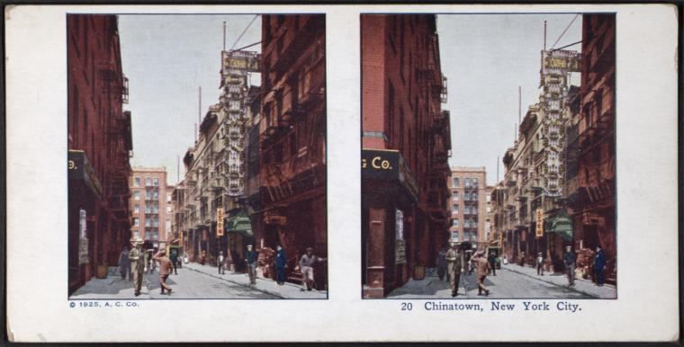

Anti-Asian hate crimes began to spike in 2020 after destructive narratives around the Coronavirus began to blame China for spreading the virus. Covid-19 was nicknamed the “China Virus,” a name coined by then President of the United States, Donald J. Trump. Chinese Americans suffered numbers of targeted hate crimes during the pandemics peak.
After just one reported incident in 2019, the number of incidents documented steadily increased for the following two years. From the span of January 2020 to September 0f 2023, over 230 crimes were reported.The detective bureau’s Hate Crime Task Force defines hate crimes as any criminal act that is “motivated in whole or substantial part by the perceived identity of the victim.”
NYC is home to over 1.5 million people of Asian descent. Over 17% of the Asian population in New York City resides in Manhattan, six percent in Chinatown. 17.3% live near the poverty line.
As trends in hate crimes against Asians decrease, the numbers in hate crimes around NYC continue to climb. Recent uptick in hate crimes throughout the city can be blamed on recent events in the war in Israel. Governor Kathy Hochul deployed $50 million that will fund local law enforcement resources protecting communities at risk of hate crimes.